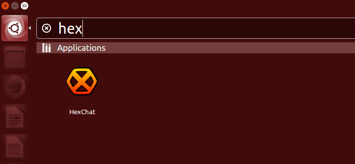
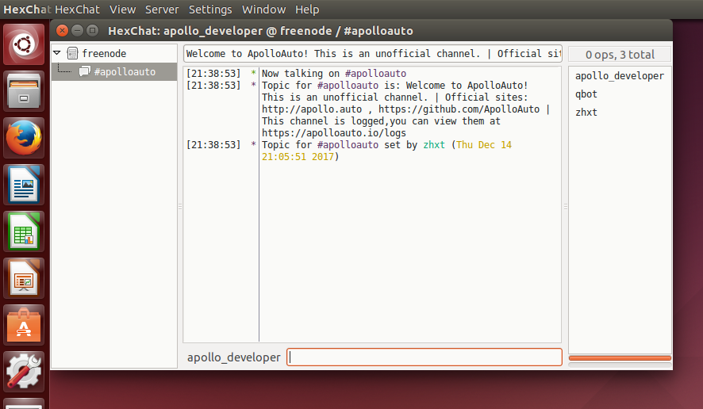

How to use IRC client on Ubuntu
Introduction
Internet Relay Chat (IRC) is a form of real-time Internet chat. It is mainly designed for group (many-to-many) communication in discussion forums called channels, but also allows one-to-one communication via private message.[Reference 1]
There are many IRC clients, like Quassel, Hexchat, XChat, Konversation(KDE), and console based irssi, WeeChat, etc.
In this guide, we will take Hexchat for an example to demonstrate. Hexchat is free and open source, available for both Linux, Mac OS X and Windows.
Installation
Installing hexchat is simple, just open up a terminal and run the following command:
sudo apt-get install hexchat
(Tested on Ubuntu 14.04, but it won't be much different from 16.04.)
Once installed, start HexChat from Unity Dash or application menu.

How to use Hexchat
Upon your first launch, you will be asked to choose your nickname and a network server. IRC network is a network of IRC servers that are connected to each other. Freenode is currently the largest IRC network and is also used by most open source projects.[Reference 2]
Enter you favourite nickname(it can be changed laterly by command nick, you will see later), and choose freenode IRC server from server list.
Then click Connect button.
Note, if freenode isn't in the list, just click Add button to add one with a server name(here we can use "Freenode"), then click Edit button to add server address and port chat.freenode.net/+6697, which the + means to signify SSL. The port is entirely optional, if no port is given the default port used is 6667 and 6697 for SSL.[Reference 3] Close the Edit dialog and go back to Server list.
It will take a few seconds to connect to the selected IRC server.
Once connected, you can choose to join a channel, or join later with join command. Here we enter #apolloauto channel to join.

Then click Ok button, it will join #apolloauto channel.

Wow! Now you can say hello to the channel members :)
Most used command
To join a channel, just type join command(IRC command prefixed with /) with channel name(IRC channel name prefixed with #)
/join #channel_name
To change a new nickname,
/nick new_nickname
To see all commands,
/help
To start one-to-one private chat,
/query the_nickname_talking_to
There are a NickServ and a ChanServ that you can register you nickname or maitain control of a channel.
To see what you can do,
/msg NickServ help
and
/msg ChanServ help